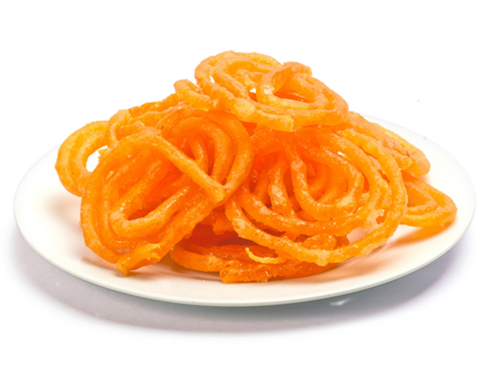

Ingredients (Makes
approx 25 jalebis)
For Batter
1.All Purpose Flour - 1/2 cup
2.Gram Flour (Besan) - 1 tsp
3.Yeast - 1/2 tsp
4.Sugar - 1/2 tsp
5.Cardomom Powder - 1/4 tsp
6.Warm Water - 1/3 cup (or as required)
7.Oil - to make dough
For Syrup
1.Sugar - 1 cup
2.Water - 1/2 cup
3.Cardomom Powder - 1/4 tsp
4.Saffron - 1/4 tsp
5.Lemon Juice (optional) - 1/2 tsp (I add it since I like them to be with a little sour taste)
Method
To make the batter
1. Dissolve the yeast in warm water, mix well and let it stay for 10 mins.
2. Mix all the remaining ingredients to the yeast mixture and knead well with
hand enough to make a ball and ensuring no lumps are left behind.
3. Keep this aside to ferment in a warm place (I place it in the oven) for
around 2 hours.
To make the syrup
1. Boil everything together on medium heat.
2. Keep stiring continuously so that sugar dissolves well and doesn't settle at
the bottom.
To make jalebis
1. Heat oil in a frying pan. Fill the batter in a ketchup bottle. (You can also
use piping bag with a nozzle)
2. Squeeze the batter out of the ketchup bottle in the hot oil in a shape of a
jalebi.
3. Fry the Jalebis until golden-brown on both sides.
4. Transfer immediately into the warm syrup and let them soak for around a
minute to a minute and half.